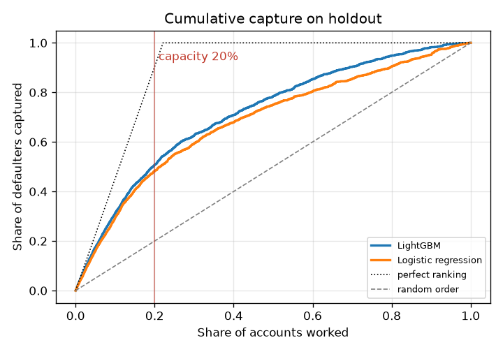
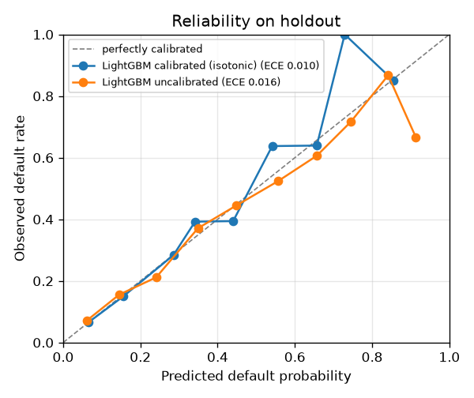
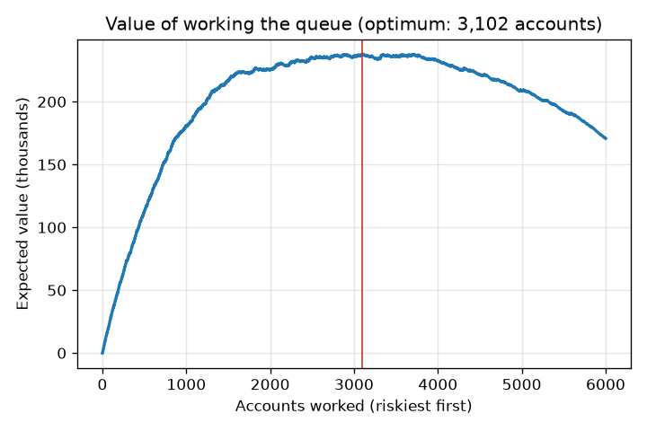
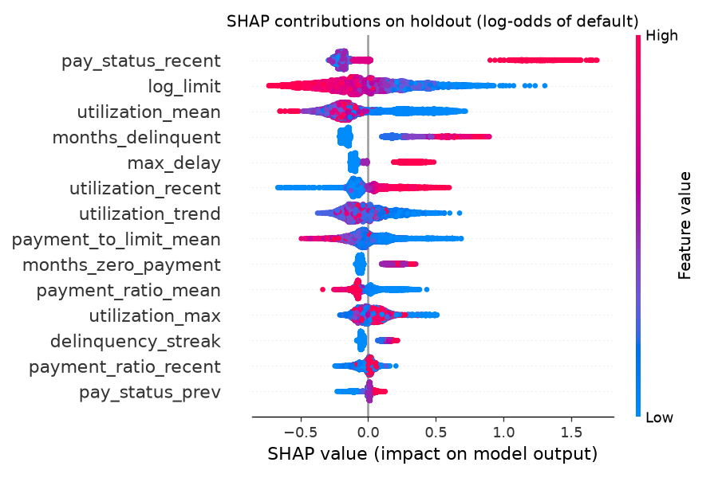
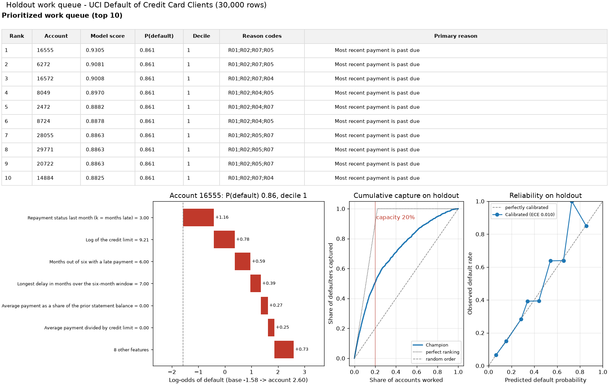
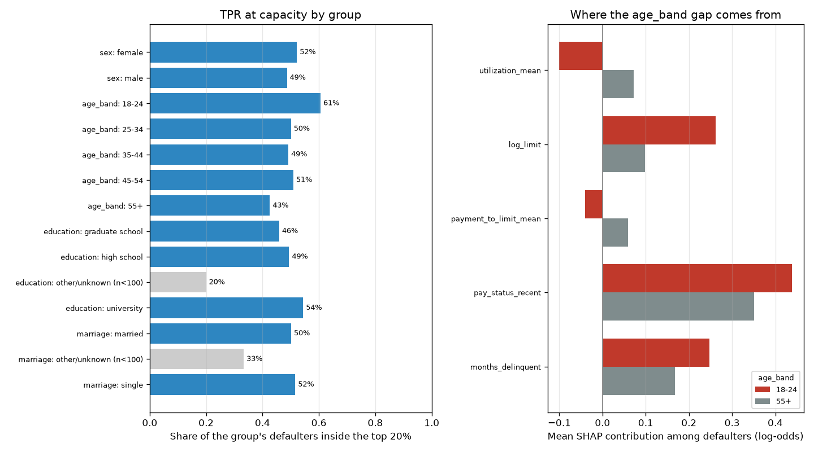

Explainable credit risk ranking
Work the riskiest accounts first, and say why for each one.
Ranks a capacity-limited collections or outreach queue by calibrated default risk, attaches plain-language reason codes to every account, sizes the queue from an explicit cost/benefit matrix, and publishes a fairness audit and model card generated from the same run.

- Defaulters captured in top 20%
- 50.7%
- ROC-AUC
- 0.778
- Calibration error (ECE)
- 0.010
- Largest group TPR gap
- 18.0 pts
baseline 48.2%
baseline 0.738
0.016 before calibration
age_band 18-24 60.6% vs 55+ 42.6%
Holdout of 6,000 accounts from UCI Default of Credit Card Clients (30,000 rows), stratified split. Every figure on this page is read from the committed results of that run.
Features
- Two models, one holdout. Logistic-regression baseline and LightGBM with monotone constraints on the risk drivers an analyst would defend, scored on the same stratified test set.
- Calibrated probabilities. Laplace-smoothed isotonic (or Platt) calibration fitted on its own split, with ECE and reliability curves.
- Reason codes on every account. Exact SHAP contributions grouped into seven plain-language reasons; only reasons that raise risk are cited.
- Queue economics. Expected value by queue size under a configurable contact cost, loss given default and cure rate, with the value-maximizing capacity.
- Fairness audit. Priority rate, TPR and FPR at capacity, calibration gap and AUC for sex, age band, education and marital status, plus a proxy screen that traces the largest gap to features.
- Generated model card. Every number in docs/MODEL_CARD.md is rendered
from the run's
metrics.json. - CLI, app and docs site.
credit-rankfor batch use, a Streamlit viewer for analysts, and an offline static site deployed to GitHub Pages.
Quickstart
Requires Python 3.11+, uv and make. One command trains, ranks
and explains on the bundled synthetic sample:
git clone https://github.com/seanmcrae/credit-risk-explain.git && cd credit-risk-explain && make install demo
Then:
make app # Streamlit queue viewer on http://localhost:8501
make train-uci # download UCI data (about 5 MB, checksum-verified, never committed),
# train, and regenerate docs/MODEL_CARD.md, docs/img/ and docs/results/
make site # build the docs site into site/ (offline)
make check # lint, format check, mypy, tests: the same gates as CI
The CLI covers the rest of the workflow:
uv run credit-rank train --data data/raw/uci_credit_default.csv --out artifacts/uci
uv run credit-rank evaluate --artifacts artifacts/uci # saved holdout metrics
uv run credit-rank evaluate --artifacts artifacts/uci --data new.csv # score a labeled file, PSI vs holdout
uv run credit-rank rank --artifacts artifacts/uci --capacity 1200 # writes queue.csv
uv run credit-rank explain 16555 --artifacts artifacts/uci --plot waterfall.png
uv run credit-rank model-card --artifacts artifacts/uci --out docs/MODEL_CARD.md --img-dir img
docker build -t credit-risk-explain . && docker run -p 8501:8501 credit-risk-explain trains on
the synthetic sample at build time and serves the app.
Results
UCI Default of Credit Card Clients (30,000 rows): 19,500 training, 4,500 calibration and 6,000 holdout accounts. LightGBM with monotone constraints is the champion; logistic regression is the baseline.
| Holdout metric | LightGBM | Logistic regression |
|---|---|---|
| ROC-AUC | 0.778 | 0.738 |
| PR-AUC | 0.557 | 0.504 |
| KS | 0.429 | 0.387 |
| Top-decile lift | 3.13 | 2.93 |
| Precision in top 1% of queue | 86.7% | 75.0% |
| Precision in top 5% of queue | 77.0% | 70.7% |
| Precision in top 10% of queue | 69.2% | 64.8% |
| Precision in top 20% of queue | 56.1% | 53.3% |
| Defaulters captured in top 20% | 50.7% | 48.2% |
| Calibrated ECE | 0.010 | 0.009 |
| Brier score | 0.135 | 0.143 |
| Expected value at 20% capacity (illustrative) | 197,200 | 184,000 |


configs/default.yaml, value peaks at 3,102 accounts (51.7% of the holdout).Lift by decile (LightGBM)
| Decile | Accounts | Defaults | Default rate | Lift | Cum. capture |
|---|---|---|---|---|---|
| 1 | 600 | 415 | 69.2% | 3.13 | 31.3% |
| 2 | 600 | 258 | 43.0% | 1.94 | 50.7% |
| 3 | 600 | 158 | 26.3% | 1.19 | 62.6% |
| 4 | 600 | 109 | 18.2% | 0.82 | 70.8% |
| 5 | 600 | 101 | 16.8% | 0.76 | 78.4% |
| 6 | 600 | 91 | 15.2% | 0.69 | 85.3% |
| 7 | 600 | 67 | 11.2% | 0.50 | 90.4% |
| 8 | 600 | 60 | 10.0% | 0.45 | 94.9% |
| 9 | 600 | 44 | 7.3% | 0.33 | 98.2% |
| 10 | 600 | 24 | 4.0% | 0.18 | 100.0% |


Score PSI between training and holdout is 0.002. Full definitions and every table are in the model card.
How evaluation works
- Split. Stratified train / calibration / test (65% / 15% / 20%, seed 42). Models never see the calibration or test rows; the calibrator never sees the test rows.
- Ranking quality. ROC-AUC, PR-AUC and KS on the raw score; lift and cumulative capture by decile; precision at the top 1%, 5%, 10% and 20% of the queue.
- Probability quality. Brier score and 10-bin ECE before and after calibration, plus a reliability curve.
- Decision value. For every queue size, expected value from realized holdout outcomes: defaulters worked times cure rate times loss given default, minus contact cost for every account worked. Capacity for the headline numbers is 20% of the holdout.
- Fairness. At the same 20% capacity, per group: priority rate, TPR and FPR, calibration gap and AUC. Slices under 100 accounts are flagged and excluded from the summary. For the attribute with the widest TPR gap, mean SHAP contributions among each group's defaulters show which features carry it.
- Stability. PSI of champion scores between training and holdout;
evaluate --datareports PSI for any new labeled file. - Tests. Hand-computed cases for KS, lift, expected value and the fairness metrics; SHAP additivity; monotonicity; determinism; invariance of scores to protected attributes; CLI, app and site smoke tests. All offline, on synthetic data.
Fairness findings
Sex, age, education and marital status never enter the model; they are joined back only for the audit. "Priority" means falling inside the top 20% of the holdout queue. The audit reports selection parity and error-rate parity side by side, because being worked can be a burden (collections contact) or a benefit (early hardship outreach) depending on the program.
| Attribute | Priority-rate ratio | TPR gap | FPR gap | Max abs calibration gap |
|---|---|---|---|---|
| age_band | 0.65 | 0.180 | 0.077 | 0.029 |
| education | 0.67 | 0.085 | 0.053 | 0.008 |
| marriage | 0.95 | 0.015 | 0.002 | 0.023 |
| sex | 0.94 | 0.036 | 0.016 | 0.011 |
The largest gap is on age_band: 60.6% of defaulters in 18-24 are prioritized versus 42.6% for 55+. The repository measures and publishes this gap; it does not apply a mitigation.
Where the gap comes from
Mean SHAP contribution (log-odds) among each group's defaulters, for the features that differ most between the two groups. A positive difference moves 18-24 defaulters up the queue. This is a proxy screen, not a causal decomposition.
| Feature | 18-24 | 55+ | Difference |
|---|---|---|---|
utilization_mean | -0.100 | +0.073 | -0.173 |
log_limit | +0.261 | +0.098 | +0.164 |
payment_to_limit_mean | -0.040 | +0.060 | -0.100 |
pay_status_recent | +0.439 | +0.351 | +0.088 |

Slices under 100 accounts are shown in grey and left out of the summary: education: other/unknown (82), marriage: other/unknown (75).
Per-group default rates, priority rates, TPR, calibration gaps and AUC are in the model card's fairness audit.
Example output
make demo on the bundled synthetic sample, captured when this site was built. Synthetic numbers say nothing about real-world performance.
$ make demo
Data: bundled synthetic sample (5,000 rows) rows=5,000 default rate=21.9%
Holdout: 1,000 accounts. Champion: LightGBM
LightGBM AUC=0.778 PR-AUC=0.550 KS=0.418 lift@D1=3.20 ECE=0.029
P@1%=0.700 P@5%=0.760 P@10%=0.700 P@20%=0.555
Logistic regression AUC=0.786 PR-AUC=0.569 KS=0.460 lift@D1=3.29 ECE=0.028
P@1%=0.800 P@5%=0.780 P@10%=0.720 P@20%=0.550
Expected value @ 200 accounts: 32,400 value-maximizing capacity: 600 (60.0%) -> 40,800
Score PSI train vs holdout: 0.0049
Artifacts in artifacts/demo
Queue of 50 of 1,000 accounts -> artifacts/demo/queue.csv
rank id probability decile reason_codes primary_reason
1 2185 0.800 1 R05;R01;R03;R02 Payments are small relative to the balance owed
2 2165 0.800 1 R05;R01;R03;R02 Payments are small relative to the balance owed
3 3081 0.800 1 R05;R01;R03;R02 Payments are small relative to the balance owed
4 3813 0.800 1 R05;R01;R03;R02 Payments are small relative to the balance owed
5 3153 0.765 1 R05;R01;R03;R02 Payments are small relative to the balance owed
6 1855 0.750 1 R03;R05;R01;R02 Balance is high relative to credit limit
7 2646 0.750 1 R03;R01;R05;R02 Balance is high relative to credit limit
8 3465 0.750 1 R05;R01;R03;R02 Payments are small relative to the balance owed
9 2341 0.750 1 R01;R05;R03;R02 Most recent payment is past due
10 3334 0.750 1 R05;R01;R03;R02 Payments are small relative to the balance owed
Account 2185: P(default)=0.800 decile=1
Reasons:
R05 Payments are small relative to the balance owed [payment_to_limit_mean=0.00, +1.66]
R01 Most recent payment is past due [pay_status_recent=4.00, +1.01]
R03 Balance is high relative to credit limit [utilization_recent=0.90, +0.75]
R02 Repeated or ongoing delinquency in the last six months [delinquency_streak=6.00, +0.42]
Largest contributions (log-odds):
+0.958 Repayment status last month (k = months late) = 4.00
+0.907 Last statement balance divided by credit limit = 0.90
+0.724 Average payment divided by credit limit = 0.00
+0.527 Average payment as a share of the prior statement balance = 0.00
+0.405 Last payment as a share of the prior statement balance = 0.00
-0.396 Average six-month balance-to-limit ratio = 0.92Architecture
Mermaid source
flowchart TB
A["UCI download or synthetic generator"] --> B["pandera schema validation"]
B --> C["Row-wise feature engineering"]
B --> G["Audit groups: sex, age band, education, marriage"]
C --> D["Stratified split: train / calibration / test"]
D --> E1["Logistic regression baseline"]
D --> E2["LightGBM with monotone constraints"]
E1 --> F["Calibrator fitted on calibration split"]
E2 --> F
F --> H["Holdout evaluation: AUC, KS, lift, precision at k, ECE, PSI"]
F --> I["Queue economics: value by capacity"]
E2 --> J["SHAP attributions and reason codes"]
G --> K["Fairness slice audit"]
F --> K
H --> L["metrics.json and charts"]
I --> L
J --> L
K --> L
L --> M["MODEL_CARD.md"]
L --> N["CLI: rank and explain"]
L --> O["Streamlit queue viewer"]| Module | Responsibility |
|---|---|
schema.py, data.py, download.py |
Canonical columns, pandera validation, UCI download with SHA-256 check, audit-group decoding |
synthetic.py |
Seeded synthetic accounts with the same schema |
features.py |
14 leakage-safe features; protected attributes excluded by construction |
models.py |
Stratified split, both models, Laplace-smoothed isotonic or Platt calibration |
metrics.py, evaluation.py |
KS, lift and capture, precision@k, expected value curve, ECE, PSI |
explain.py |
TreeSHAP / linear SHAP and grouped reason codes |
fairness.py |
Per-group priority rate, TPR/FPR at capacity, calibration gap, slice AUC |
queue.py |
Saved model bundle, queue building, single-account explanations |
pipeline.py, model_card.py, plots.py, cli.py |
Orchestration, generated model card, charts, typer CLI |
docsite/ |
Offline static site: README sections, rendered docs, results snapshot, SVG diagram |
Design decisions
- Rank on the raw score, report the calibrated probability. Isotonic calibration is a step function, so ranking on it would tie large blocks at the top of the queue (on the UCI holdout the top calibrated level, 0.861, covers 61 accounts). The raw score orders the queue; the calibrated probability feeds display, expected value and calibration audits. Deciles are cut on holdout scores and stored in the bundle, so "decile 1" means the same thing in every scoring batch.
- Smoothed isotonic calibration. Plain isotonic regression returns exactly 1.0 for a small
pure block at the top. Each block's level is
(defaults + 1) / (accounts + 2)instead, which leaves large blocks unchanged and stops the queue from claiming certainty. - Monotone constraints on the risk drivers an analyst would defend (months late, delinquency counts, utilization, missed payments up; payment ratio down). On the UCI run they cost nothing: AUC 0.778 with eight constraints against 0.777 with six. They also remove explanations such as "an older late payment lowered risk" that come from collinear delinquency features.
- Reason codes group correlated features. Three utilization features would otherwise split credit and crowd out other reasons. Groups are netted, and only groups that raise risk are returned, matching what an adverse-action reason has to explain.
- Capacity is a decision, not a parameter. The expected-value curve is computed from realized
holdout outcomes under the configured contact cost, loss given default and cure rate. Those
figures are illustrative and live in
configs/default.yaml. - Protected attributes are audit-only. They never enter
features.py, and a test flips sex and age on scored accounts to confirm probabilities do not move. The audit reports selection-rate and error-rate parity side by side, because being prioritized can be a burden (collections contact) or a benefit (hardship outreach) depending on the program. - Stratified, not out-of-time, split. The source is one six-month snapshot with no time axis.
The PSI check and
evaluate --dataare where an out-of-time sample would plug in.
Data
- Real: UCI Machine Learning Repository, Default of Credit Card Clients,
30,000 Taiwanese card holders, April-September 2005, licensed CC BY 4.0. Cite: Yeh, I. C., &
Lien, C. H. (2009). The comparisons of data mining techniques for the predictive accuracy of
probability of default of credit card clients. Expert Systems with Applications, 36(2),
2473-2480.
scripts/download_uci.pyverifies the archive's SHA-256 and writesdata/raw/uci_credit_default.csv, which is git-ignored. - Synthetic:
data/sample/synthetic_credit_5k.csvis 5,000 synthetic accounts fromgenerate_synthetic(5000, seed=7). Relationships are hand-specified to be plausible, not fitted to the real data. Tests and CI use synthetic data only; no test touches the network.
Where it fails
Read from the UCI holdout snapshot at 20% capacity. The fairness audit drops slices under 100 accounts from its summary; they are listed here because that is where the model is weakest.
Model and data limits
| Slice or failure mode | Holdout evidence | What it means |
|---|---|---|
| Age 18-24 vs 55+ | TPR 0.606 vs 0.426 (gap 0.180, target < 0.10); 18-24 calibration gap 0.029 against a 0.03 limit | Young defaulters are worked far more often; traced mainly to credit limit acting as a partial proxy for age |
| Age 55+ | 227 accounts | Smallest audited age slice; no confidence intervals are reported, so its TPR is a noisy point estimate |
| Education: high school | AUC 0.734 (1,014 accounts) vs 0.78-0.79 for university and graduate school | Weakest ranking among the audited slices |
| Education: other/unknown | AUC 0.551, calibration gap 0.099 (82 accounts, excluded from the summary) | Ranking is close to random and probabilities run high for this group |
| Marriage: other/unknown | AUC 0.679, calibration gap 0.072 (75 accounts, excluded from the summary) | Same pattern, smaller |
| Top of the queue | Precision 86.7% in the top 1%, 69.2% in the top 10%, 56.1% in the top 20% | Most of a 20% queue's contacts are still non-defaulters |
Design and scaffolding limits
| Limit | Consequence |
|---|---|
| Stratified split of one six-month 2005 snapshot | No out-of-time test; the PSI of 0.002 compares train with a holdout from the same period, so it cannot show drift |
| Baselines are LightGBM vs logistic regression only | No rule-based queue ("2+ months late", "highest balance first") is scored, so the gain over current practice is not measured |
| Champion is fixed in config | On the bundled synthetic sample, logistic regression scores higher (AUC 0.786 vs 0.778) and LightGBM is still the champion |
| Economics are placeholders | Expected value and the value-maximizing capacity move with the contact cost, loss given default and cure rate in config |
Considered and rejected. Ranking the queue on the calibrated probability. Isotonic calibration is a step function, so on the UCI holdout its top level (0.861) ties 61 accounts and throws away ordering inside the block. The queue ranks on the raw score and uses the calibrated probability for display, economics and audits (see Design decisions and PRODUCT.md).
Known limitations
- One 2005 snapshot from one market: no out-of-time validation, seasonality or drift, and no claim that the model transfers to another portfolio.
- The target is next-month default. The queue ranks who is likely to default, not who will respond to contact; an uplift model would be the right target for outreach.
- The economics are placeholders and drive the recommended capacity.
- On the UCI holdout, defaulters aged 18-24 are prioritized at 60.6% versus 42.6% for 55+ at 20% capacity. The model card's proxy screen traces it mainly to credit limit (+0.164 log-odds for 18-24 defaulters relative to 55+) and recent payment status (+0.088), partly offset by utilization (-0.173). The repository measures the gap; it does not apply a mitigation.
- Reason codes explain the model, not the customer's situation, and are not legal adverse-action notices.
The model card covers intended use, out-of-scope uses and limitations in full; the product brief covers users, success metrics, risks and the roadmap.